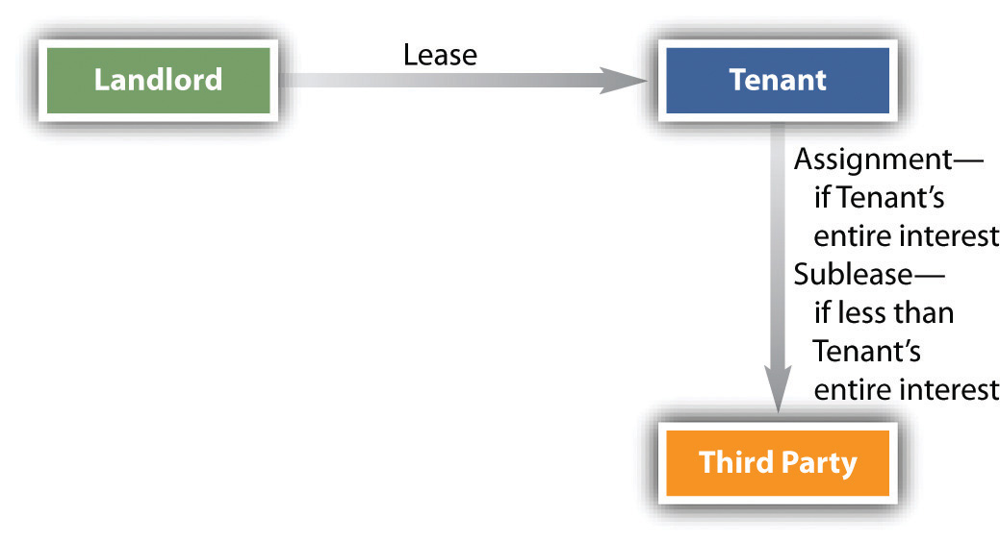

After reading this chapter, you should understand the following:
In Chapter 28 "The Nature and Regulation of Real Estate and the Environment", we noted that real property can be divided into types of interests: freehold estates and leasehold estates. The freehold estate is characterized by indefinite duration, and the owner has title and the right to possess. The leasehold estateAn estate whose termination date is usually known—a one-year lease, for example., by contrast, lasts for a specific period. The owner of the leasehold estate—the tenant—may take possession but does not have title to the underlying real property. When the period of the leasehold ends, the right to possession reverts to the landlord—hence the landlord’s interest during the tenant’s possession is known as a reversionary interest. Although a leasehold estate is said to be an interest in real property, the leasehold itself is in fact personal property. The law recognizes three types of leasehold estates: the estate for years, the periodic tenancy, and the tenancy at will.
The estate for yearsA leasehold in which the tenant has possession for a fixed term. is characterized by a definite beginning and a definite end. When you rent an apartment for two years, beginning September 1 and ending on the second August 31, you are the owner of an estate for years. Virtually any period will do; although it is called an estate “for years,” it can last but one day or extend one thousand years or more. Some statutes declare that any estate for years longer than a specified period—one hundred years in Massachusetts, for instance—is a fee simple estate.
Unless the leaseThe agreement that creates the leasehold interest.—the agreement creating the leasehold interest—provides otherwise, the estate for years terminates automatically at midnight of the last day specified in the lease. The lease need not refer explicitly to calendar dates. It could provide that “the tenant may occupy the premises for six months to commence one week from the date of signing.” Suppose the landlord and tenant sign on June 23. Then the lease term begins at 12:00 a.m. on July 1 and ends just before midnight of December 31. Unless a statute provides otherwise, the landlord is not obligated to send the tenant a notice of termination. Should the tenant die before the lease term ends, her property interest can be inherited under her will along with her other personal property or in accordance with the laws of intestate succession.
As its name implies, a periodic tenancyA tenancy for a period of time that is renewed automatically until either landlord or tenant notifies the other that it will end. lasts for a period that is renewed automatically until either landlord or tenant notifies the other that it will end. The periodic tenancy is sometimes called an estate from year to year (or month to month, or week to week). The lease may provide explicitly for the periodic tenancy by specifying that at the expiration of, say, a one-year lease, it will be deemed renewed for another year unless one party notifies the other to the contrary within six months prior to the expiration of the term. Or the periodic tenancy may be created by implication, if the lease fails to state a term or is defective in some other way, but the tenant takes possession and pays rent. The usual method of creating a periodic tenancy occurs when the tenant remains on the premises (“holds over”) when an estate for years under a lease has ended. The landlord may either reject or accept the implied offer by the tenant to rent under a periodic tenancy. If he rejects the implied offer, the tenant may be ejected, and the landlord is entitled to rent for the holdover period. If he accepts the offer, the original lease determines the rent and length of the renewable period, except that no periodic tenancy may last longer than from year to year—that is, the renewable period may never be any longer than twelve months.
At common law, a party was required to give notice at least six months prior to the end of a year-to-year tenancy, and notice equal to the term for any other periodic tenancy. In most states today, the time period for giving notice is regulated by statute. In most instances, a year-to-year tenancy requires a month’s notice, and shorter tenancies require notice equal to the term. To illustrate the approach typically used, suppose Simone rents from Anita on a month-to-month tenancy beginning September 15. On March 30, Simone passes the orals for her doctorate and decides to leave town. How soon may she cancel her tenancy? If she calls Anita that afternoon, she will be two weeks shy of a full month’s notice for the period ending April 15, so the earliest she can finish her obligation to pay rent is May 15. Suppose her term had been from the first of each month. On April 1, she notifies Anita of her intention to leave at the end of April, but she is stuck until the end of May, because notice on the first of the month is not notice for a full month. She would have had to notify Anita by March 31 to terminate the tenancy by April 30.
If the landlord and tenant agree that the lease will last only as long as both want it to, then they have created a tenancy at willA tenancy that will last only so long as the landlord and tenant desire.. Statutes in most states require some notice of intention to terminate. Simone comes to the university to study, and Anita gives her a room to stay in for free. The arrangement is a tenancy at will, and it will continue as long as both want it to. One Friday night, after dinner with classmates, Simone decides she would rather move in with Bob. She goes back to her apartment, packs her suitcase, and tells Anita she’s leaving. The tenancy at will terminates that day.
Leases can be created orally, unless the term of the lease exceeds the period specified by the Statute of Frauds. In most states, that period is one year. Any oral lease for a period longer than the statutory period is invalid. Suppose that Simone, in a state with a one-year Statute of Frauds period, orally agrees with Anita to rent Anita’s apartment for two years, at a monthly rent of $250. The lease is invalid, and either could repudiate it.
A lease required to be in writing under the Statute of Frauds must contain the following items or provisions: (1) it must identify the parties, (2) it must identify the premises, (3) it must specify the duration of the lease, (4) it must state the rent to be paid, and (5) it must be signed by the party against whom enforcement is sought (known as “the party to be charged”).
The provisions need not be perfectly stated. As long as they satisfy the five requirements, they will be adequate to sustain the lease under the Statute of Frauds. For instance, the parties need not necessarily be named in the lease itself. Suppose that the prospective tenant gives the landlord a month’s rent in advance and that the landlord gives the tenant a receipt listing the property and the terms of the lease but omitting the name of the tenant. The landlord subsequently refuses to let the tenant move in. Who would prevail in court? Since the tenant had the receipt in her possession, that would be sufficient to identify her as the tenant to whom the terms of the lease were meant to apply. Likewise, the lease need not specify every aspect of the premises to be enjoyed. Thus the tenant who rents an apartment in a building will be entitled to the use of the common stairway, the roof, and so on, even though the lease is silent on these points. And as long as a specific amount is ascertainable, the rent may be stated in other than absolute dollar terms. For example, it could be expressed in terms of a cost-of-living index or as a percentage of the tenant’s dollar business volume.
A leasehold estate, unlike a freehold estate, has a definite duration. The landlord’s interest during the term of a leasehold estate is a reversionary interest. Leasehold estates can last for short terms or very long terms; in the case of long-term leases, a property right is created that can be passed to heirs. The usual landlord-tenant relationship is a periodic tenancy, which carries with it various common-law and statutory qualifications regarding renewal and termination. In a tenancy at will, either landlord or tenant can end the leasehold estate as soon as notice is provided by either party.
The law imposes a number of duties on the landlord and gives the tenant a number of corresponding rights. These include (1) possession, (2) habitable condition, and (3) noninterference with use.
The landlord must give the tenant the right of possession of the property. This duty is breached if, at the time the tenant is entitled to take possession, a third party has paramount title to the property and the assertion of this title would deprive the tenant of the use contemplated by the parties. Paramount titleSuperior title. means any legal interest in the premises that is not terminable at the will of the landlord or at the time the tenant is entitled to take possession.
If the tenant has already taken possession and then discovers the paramount title, or if the paramount title only then comes into existence, the landlord is not automatically in breach. However, if the tenant thereafter is evicted from the premises and thus deprived of the property, then the landlord is in breach. Suppose the landlord rents a house to a doctor for ten years, knowing that the doctor intends to open a medical office in part of the home and knowing also that the lot is restricted to residential uses only. The doctor moves in. The landlord is not yet in default. The landlord will be in default if a neighbor obtains an injunction against maintaining the office. But if the landlord did not know (and could not reasonably have known) that the doctor intended to use his home for an office, then the landlord would not be in default under the lease, since the property could have been put to normal—that is, residential—use without jeopardizing the tenant’s right to possession.
As applied to leases, the old common-law doctrine of caveat emptor“Let the buyer beware.” At common law, once the tenant has signed the lease, she must take the premises as she finds them. said that once the tenant has signed the lease, she must take the premises as she finds them. Since she could inspect them before signing the lease, she should not complain later. Moreover, if hidden defects come to light, they ought to be easy enough for the tenant herself to fix. Today this rule no longer applies, at least to residential rentals. Unless the parties specifically agree otherwise, the landlord is in breach of his lease if the conditions are unsuitable for residential use when the tenant is due to move in. The landlord is held to an implied warranty of habitabilityThe landlord’s duty to provide conditions suitable for residential use..
The change in the rule is due in part to the conditions of the modern urban setting: tenants have little or no power to walk away from an available apartment in areas where housing is scarce. It is also due to modem construction and technology: few tenants are capable of fixing most types of defects. A US court of appeals has said the following:
Today’s urban tenants, the vast majority of whom live in multiple dwelling houses, are interested not in the land, but solely in “a house suitable for occupation.” Furthermore, today’s city dweller usually has a single, specialized skill unrelated to maintenance work; he is unable to make repairs like the “jack-of-all-trades” farmer who was the common law’s model of the lessee. Further, unlike his agrarian predecessor who often remained on one piece of land for his entire life, urban tenants today are more mobile than ever before. A tenant’s tenure in a specific apartment will often not be sufficient to justify efforts at repairs. In addition, the increasing complexity of today’s dwellings renders them much more difficult to repair than the structures of earlier times. In a multiple dwelling, repairs may require access to equipment and areas in control of the landlord. Low and middle income tenants, even if they were interested in making repairs, would be unable to obtain financing for major repairs since they have no long-term interest in the property.Javins v. First National Realty Corp., 428 F.2d 1071, 1078-79 (D.C. Cir.), cert. denied, 400 U.S. 925 (1970).
At common law, the landlord was not responsible if the premises became unsuitable once the tenant moved in. This rule was often harshly applied, even for unsuitable conditions caused by a sudden act of God, such as a tornado. Even if the premises collapsed, the tenant would be liable to pay the rent for the duration of the lease. Today, however, many states have statutorily abolished the tenant’s obligation to pay the rent if a non-man-made force renders the premises unsuitable. Moreover, most states today impose on the landlord, after the tenant has moved in, the responsibility for maintaining the premises in a safe, livable condition, consistent with the safety, health, and housing codes of the jurisdiction.
These rules apply only in the absence of an express agreement between the parties. The landlord and tenant may allocate in the lease the responsibility for repairs and maintenance. But it is unlikely that any court would enforce a lease provision waiving the landlord’s implied warranty of habitability for residential apartments, especially in areas where housing is relatively scarce.
In addition to maintaining the premises in a physically suitable manner, the landlord has an obligation to the tenant not to interfere with a permissible use of the premises. Suppose Simone moves into a building with several apartments. One of the other tenants consistently plays music late in the evening, causing Simone to lose sleep. She complains to the landlord, who has a provision in the lease permitting him to terminate the lease of any tenant who persists in disturbing other tenants. If the landlord does nothing after Simone has notified him of the disturbance, he will be in breach. This right to be free of interference with permissible uses is sometimes said to arise from the landlord’s implied covenant of quiet enjoymentAn implied right in most leases—the right to be free of interference with permissible uses..
When the landlord breaches one of the foregoing duties, the tenant has a choice of three basic remedies: terminationA remedy for a tenant, but requiring notice to the landlord and compliance with previously agreed on terms or statutory requirements for terminating the leasehold estate., damages, or rent adjustment.
In virtually all cases where the landlord breaches, the tenant may terminate the lease, thus ending her obligation to continue to pay rent. To terminate, the tenant must (1) actually vacate the premises during the time that she is entitled to terminate and (2) either comply with lease provisions governing the method of terminating or else take reasonable steps to ensure that the landlord knows she has terminated and why.
When the landlord physically deprives the tenant of possession, he has evicted the tenant; wrongful eviction permits the tenant to terminate the lease. Even if the landlord’s conduct falls short of actual eviction, it may interfere substantially enough with the tenant’s permissible use so that they are tantamount to eviction. This is known as constructive evictionConditions that interfere substantially enough with the tenant’s permissible use that it is tantamount to eviction., and it covers a wide variety of actions by both the landlord and those whose conduct is attributable to him, as illustrated by Fidelity Mutual Life Insurance Co. v Kaminsky, (see Section 32.5.1 "Constructive Eviction").
Another traditional remedy is money damages, available whenever termination is an appropriate remedy. Damages may be sought after termination or as an alternative to termination. Suppose that after the landlord had refused Simone’s request to repair the electrical system, Simone hired a contractor to do the job. The cost of the repair work would be recoverable from the landlord. Other recoverable costs can include the expense of relocating if the lease is terminated, moving costs, expenses connected with finding new premises, and any increase in rent over the period of the terminated lease for comparable new space. A business may recover the loss of anticipated business profits, but only if the extent of the loss is established with reasonable certainty. In the case of most new businesses, it would be almost impossible to prove loss of profits.
In all cases, the tenant’s recovery will be limited to damages that would have been incurred by a tenant who took all reasonable steps to mitigate losses. That is, the tenant must take reasonable steps to prevent losses attributable to the landlord’s breach, to find new space if terminating, to move efficiently, and so on.
Under an old common-law rule, the landlord’s obligation to provide the tenant with habitable space and the tenant’s obligation to pay rent were independent covenantsUnder an old common-law rule, the landlord’s obligation to provide the tenant with habitable space and the tenant’s obligation to pay rent.. If the landlord breached, the tenant was still legally bound to pay the rent; her only remedies were termination and suit for damages. But these are often difficult remedies for the tenant. Termination means the aggravation of moving, assuming that new quarters can be found, and a suit for damages is time consuming, uncertain, and expensive. The obvious solution is to permit the tenant to withhold rent, or what we here call rent adjustmentOne remedy among several for tenants where the landlord has breached one or more duties. Rent adjustment may involve withholding the rent until the landlord complies, depositing payments in escrow, or applying withheld rent to the problem that the landlord has not fixed.. The modern rule, adopted in several states (but not yet in most), holds that the mutual obligations of landlord and tenant are dependent. States following this approach have developed three types of remedies: rent withholding, rent application, and rent abatement.
The simplest approach is for the tenant to withhold the rent until the landlord remedies the defect. In some states, the tenant may keep the money. In other states, the rent must be paid each month into an escrow account or to the court, and the money in the escrow account becomes payable to the landlord when the default is cured.
Several state statutes permit the tenant to apply the rent money directly to remedy the defect or otherwise satisfy the landlord’s performance. Thus Simone might have deducted from her rent the reasonable cost of hiring an electrician to repair the electrical system.
In some states, the rent may be reduced or even eliminated if the landlord fails to cure specific types of defects, such as violations of the housing code. The abatement will continue until the default is eliminated or the lease is terminated.
In addition to the duties of the tenant set forth in the lease itself, the common law imposes three other obligations: (1) to pay the rent reserved (stated) in the lease, (2) to refrain from committing waste (damage), and (3) not to use the premises for an illegal purpose.
What constitutes rent is not necessarily limited to the stated periodic payment usually denominated “rent.” The tenant may also be responsible for such assessments as taxes and utilities, payable to the landlord as rent. Simone’s lease calls for her to pay taxes of $500 per year, payable in quarterly installments. She pays the rent on the first of each month and the first tax bill on January 1. On April 1, she pays the rent but defaults on the next tax bill. She has failed to pay the rent reserved in the lease.
The landlord in the majority of states is not obligated to mitigate his losses should the tenant abandon the property and fail thereafter to pay the rent. As a practical matter, this means that the landlord need not try to rent out the property but instead can let it sit vacant and sue the defaulting tenant for the balance of the rent as it becomes due. However, the tenant might notify the landlord that she has abandoned the property or is about to abandon it and offer to surrender it. If the landlord accepts the surrender, the lease then terminates. Unless the lease specifically provides for it, a landlord who accepts the surrender will not be able to recover from the tenant the difference between the amount of her rent obligation and the new tenant’s rent obligation.
Many leases require the tenant to make a security depositA payment of a specific sum of money to secure the tenant’s performance of duties under the lease.—a payment of a specific sum of money to secure the tenant’s performance of duties under the lease. If the tenant fails to pay the rent or otherwise defaults, the landlord may use the money to make good the tenant’s performance. Whatever portion of the money is not used to satisfy the tenant’s obligations must be repaid to the tenant at the end of the lease. In the absence of an agreement to the contrary, the landlord must pay interest on the security deposit when he returns the sum to the tenant at the end of the lease.
In the absence of a specific agreement in the lease, the tenant is entitled to physically change the premises in order to make the best possible permissible use of the property, but she may not make structural alterations or damage (waste) the property. A residential tenant may add telephone lines, put up pictures, and affix bookshelves to the walls, but she may not remove a wall in order to enlarge a room.
The tenant must restore the property to its original condition when the lease ends, but this requirement does not include normal wear and tear. Simone rents an apartment with newly polished wooden floors. Because she likes the look of oak, she decides against covering the floors with rugs. In a few months’ time, the floors lose their polish and become scuffed. Simone is not obligated to refinish the floors, because the scuffing came from normal walking, which is ordinary wear and tear.
It is a breach of the tenant’s obligation to use the property for an illegal purpose. A landlord who found a tenant running a numbers racket, for example, or making and selling moonshine whisky could rightfully evict her.
In general, when the tenant breaches any of the three duties imposed by the common law, the landlord may terminate the lease and seek damages. One common situation deserves special mention: the holdover tenant. When a tenant improperly overstays her lease, she is said to be a tenant at sufferanceWhen a tenant improperly overstays his or her lease., meaning that she is liable to eviction. Some cultures, like the Japanese, exhibit a considerable bias toward the tenant, making it exceedingly difficult to move out holdover tenants who decide to stay. But in the United States, landlords may remove tenants through summary (speedy) proceedings available in every state or, in some cases, through self-helpEntering the premises to regain possession and remove a holdover tenant’s belongings—must be peaceful, must not cause physical harm or even convey the expectation of harm to the tenant or anyone on the premises with the tenant’s permission, and must not result in unreasonable damage to the tenant’s property.. Self-help is a statutory remedy for landlords or incoming tenants in some states and involves the peaceful removal of a holdover tenant’s belongings. If a state has a statute providing a summary procedure for removing a holdover tenant, neither the landlord nor the incoming tenant may resort to self-help, unless the statute specifically allows it. A provision in the lease permitting self-help in the absence of statutory authority is unenforceable. Self-help must be peaceful, must not cause physical harm or even the expectation of harm to the tenant or anyone on the premises with his permission, and must not result in unreasonable damage to the tenant’s property. Any clause in the lease attempting to waive these conditions is void.
Self-help can be risky, because some summary proceeding statutes declare it to be a criminal act and because it can subject the landlord to tort liability. Suppose that Simone improperly holds over in her apartment. With a new tenant scheduled to arrive in two days, the landlord knocks on her door the evening after her lease expires. When Simone opens the door, she sees the landlord standing between two 450-pound Sumo wrestlers with menacing expressions. He demands that she leave immediately. Fearing for her safety, she departs instantly. Since she had a reasonable expectation of harm had she not complied with the landlord’s demand, Simone would be entitled to recover damages in a tort suit against her landlord, although she would not be entitled to regain possession of the apartment.
Besides summary judicial proceedings and self-help, the landlord has another possible remedy against the holdover tenant: to impose another rental term. In order to extend the lease in this manner, the landlord need simply notify the holdover tenant that she is being held to another term, usually measured by the periodic nature of the rent payment. For example, if rent was paid each month, then imposition of a new term results in a month-to-month tenancy. One year is the maximum tenancy that the landlord can create by electing to hold the tenant to another term.
Both landlords and tenants have rights and duties. The primary duty of a landlord is to meet the implied warranty of habitability: that the premises are in a safe, livable condition. The tenant has various remedies available if the landlord fails to meet that duty, or if the landlord fails to meet the implied covenant of quiet enjoyment. These include termination, damages, and withholding of rent. The tenant has duties as well: to pay the rent, refrain from committing waste, and not use the property for an illegal purpose.
At common law, the interests of the landlord and tenant may be transferred freely unless (1) the tenancy is at will; (2) the lease requires either party to perform significant personal services, which would be substantially less likely to be performed if the interest was transferred; or (3) the parties agree that the interest may not be transferred.
When the landlord sells his interest, the purchaser takes subject to the lease. If there are tenants with leases in an apartment building, the new landlord may not evict them simply because he has taken title. The landlord may divide his interest as he sees fit, transferring all or only part of his entire interest in the property. He may assign his right to the rent or sell his reversionary interest in the premises. For instance, Simone takes a three-year lease on an apartment near the university. Simone’s landlord gives his aged uncle his reversionary interest for life. This means that Simone’s landlord is now the uncle, and she must pay him rent and look to him for repairs and other performances owed under the lease. When Simone’s lease terminates, the uncle will be entitled to rent the premises. He does so, leasing to another student for three years. One year later, the uncle dies. His nephew (Simone’s original landlord) has the reversionary interest and so once again becomes the landlord. He must perform the lease that the uncle agreed to with the new student, but when that lease expires, he will be free to rent the premises as he sees fit.
Why would a tenant be interested in transferring her leasehold interest? For at least two reasons: she might need to move before her lease expired, or she might be able to make money on the leasehold itself. In recent years, many companies in New York have discovered that their present leases were worth far more to them by moving out than staying in. They had signed long-term leases years ago when the real estate market was glutted and were paying far less than current market prices. By subletting the premises and moving to cheaper quarters, they could pocket the difference between their lease rate and the market rate they charged their subtenants.
The tenant can transfer her interest in the lease by assigning or by subletting. In an assignmentThe tenant transfers all interest in the premises, along with all obligations., the tenant transfers all interest in the premises and all obligations. Thus the assignee-tenant is duty bound to pay the landlord the periodic rental and to perform all other provisions in the lease. If the assignee defaulted, however, the original tenant would remain liable to the landlord. In short, with an assignment, both assignor and assignee are liable under the lease unless the landlord releases the assignor. By contrast, a subleaseA transfer of something less than the entire leasehold interest. is a transfer of something less than the entire leasehold interest (see Figure 32.1 "Assignment vs. Sublease"). For instance, the tenant might have five years remaining on her lease and sublet the premises for two years, or she might sublet the ground floor of a four-story building. Unlike an assignee, the subtenant does not step into the shoes of the tenant and is not liable to the landlord for performance of the tenant’s duties. The subtenant’s only obligations are to the tenant. What distinguishes the assignment from the sublease is not the name but whether or not the entire leasehold interest has been transferred. If not, the transfer is a sublease.
Figure 32.1 Assignment vs. Sublease
Many landlords include clauses in their leases prohibiting assignments or subleases, and these clauses are generally upheld. But the courts construe them strictly, so that a provision barring subleases will not be interpreted to bar assignments.
The interests of landlords and tenants can be freely transferred unless the parties agree otherwise or unless there is a tenancy at will. If the tenant assigns her leasehold interest, she remains liable under the lease unless the landlord releases her. If less than the entire leasehold interest is transferred, it is a sublease rather than an assignment. But the original lease may prohibit either or both.
In Chapter 28 "The Nature and Regulation of Real Estate and the Environment", we discussed the tort liability of the owner or occupier of real estate to persons injured on the property. As a general rule, when injury occurs on premises rented to a tenant, it is the tenant—an occupier—who is liable. The reason for this rule seems clear: The landlord has given up all but a reversionary interest in the property; he has no further control over the premises. Indeed, he is not even permitted on the property without the tenant’s permission. But over the years, certain exceptions have developed to the rule that the landlord is not liable. The primary reason for this change is the recognition that the landlord is better able to pay for repairs to his property than his relatively poorer tenants and that he has ultimate control over the general conditions surrounding the apartment or apartment complex.
The landlord is liable to the tenant, her family, or guests who are injured by hidden and dangerous conditions that the landlord knew about or should have known about but failed to disclose to the tenant.
The landlord is liable to people injured outside the property by defects that existed when the lease was signed. Simone rents a dilapidated house and agrees with the landlord to keep the building repaired. She neglects to hire contractors to repair the cracked and sagging wall on the street. The building soon collapses, crushing several automobiles parked alongside. Simone can be held responsible and so can the landlord; the tenant’s contractual agreement to maintain the property is not sufficient to shift the liability away from the landlord. In a few cases, the landlord has even been held liable for activities carried on by the tenant, but only because he knew about them when the lease was signed and should have known that the injuries were probable results.
A landlord is responsible for injuries caused by dangerous conditions on property to be used by the public if the danger existed when the lease was made. Thus an uneven floor that might cause people to trip or a defective elevator that stops a few inches below the level of each floor would be sufficiently dangerous to pin liability on the landlord.
Frequently, a landlord will retain control over certain areas of the property—for example, the common hallways and stairs in an apartment building. When injuries occur as a result of faulty and careless maintenance of these areas, the landlord will be responsible. In more than half the states, the landlord is liable for failure to remove ice and snow from a common walkway and stairs at the entrance. In one case, the tenant even recovered damages for a broken hip caused when she fell in fright from seeing a mouse that jumped out of her stove; she successfully charged the landlord with negligence in failing to prevent mice from entering the dwelling in areas under his control.
Landlords often have a duty to repair the premises. The duty may be statutory or may rest on an agreement in the lease. In either case, the landlord will be liable to a tenant or others for injury resulting from defects that should have been repaired. No less important, a landlord will be liable even if he has no duty to repair but negligently makes repairs that themselves turn out to be dangerous.
At common law, injuries taking place on leased premises were the responsibility of the tenant. There were notable exceptions, including situations where hidden dangers were known to the landlord but not the tenant, where the premises’ condition caused injury to people off the premises, or where faulty repairs caused the injuries. The modern trend is to adopt general negligence principles to determine landlord liability. Thus where the landlord does not use reasonable care and subjects others to an unreasonable risk of harm, there may be liability for the landlord. This varies from state to state.
Fidelity Mutual Life Insurance Co. v. Kaminsky
768 S.W.2d 818 (Tx. Ct. App. 1989)
MURPHY, JUSTICE
The issue in this landlord-tenant case is whether sufficient evidence supports the jury’s findings that the landlord and appellant, Fidelity Mutual Life Insurance Company [“Fidelity”], constructively evicted the tenant, Robert P. Kaminsky, M.D., P.A. [“Dr. Kaminsky”] by breaching the express covenant of quiet enjoyment contained in the parties’ lease. We affirm.
Dr. Kaminsky is a gynecologist whose practice includes performing elective abortions. In May 1983, he executed a lease contract for the rental of approximately 2,861 square feet in the Red Oak Atrium Building for a two-year term which began on June 1, 1983. The terms of the lease required Dr. Kaminsky to use the rented space solely as “an office for the practice of medicine.” Fidelity owns the building and hires local companies to manage it. At some time during the lease term, Shelter Commercial Properties [“Shelter”] replaced the Horne Company as managing agents. Fidelity has not disputed either management company’s capacity to act as its agent.
The parties agree that: (1) they executed a valid lease agreement; (2) Paragraph 35 of the lease contains an express covenant of quiet enjoyment conditioned on Dr. Kaminsky’s paying rent when due, as he did through November 1984; Dr. Kaminsky abandoned the leased premises on or about December 3, 1984 and refused to pay additional rent; anti-abortion protestors began picketing at the building in June of 1984 and repeated and increased their demonstrations outside and inside the building until Dr. Kaminsky abandoned the premises.
When Fidelity sued for the balance due under the lease contract following Dr. Kaminsky’s abandonment of the premises, he claimed that Fidelity constructively evicted him by breaching Paragraph 35 of the lease. Fidelity apparently conceded during trial that sufficient proof of the constructive eviction of Dr. Kaminsky would relieve him of his contractual liability for any remaining rent payments. Accordingly, he assumed the burden of proof and the sole issue submitted to the jury was whether Fidelity breached Paragraph 35 of the lease, which reads as follows:
Lessee, on paying the said Rent, and any Additional Rental, shall and may peaceably and quietly have, hold and enjoy the Leased Premises for the said term.
A constructive eviction occurs when the tenant leaves the leased premises due to conduct by the landlord which materially interferes with the tenant’s beneficial use of the premises. Texas law relieves the tenant of contractual liability for any remaining rentals due under the lease if he can establish a constructive eviction by the landlord.
The protests took place chiefly on Saturdays, the day Dr. Kaminsky generally scheduled abortions. During the protests, the singing and chanting demonstrators picketed in the building’s parking lot and inner lobby and atrium area. They approached patients to speak to them, distributed literature, discouraged patients from entering the building and often accused Dr. Kaminsky of “killing babies.” As the protests increased, the demonstrators often occupied the stairs leading to Dr. Kaminsky’s office and prevented patients from entering the office by blocking the doorway. Occasionally they succeeded in gaining access to the office waiting room area.
Dr. Kaminsky complained to Fidelity through its managing agents and asked for help in keeping the protestors away, but became increasingly frustrated by a lack of response to his requests. The record shows that no security personnel were present on Saturdays to exclude protestors from the building, although the lease required Fidelity to provide security service on Saturdays. The record also shows that Fidelity’s attorneys prepared a written statement to be handed to the protestors soon after Fidelity hired Shelter as its managing agent. The statement tracked TEX. PENAL CODE ANN. §30.05 (Vernon Supp. 1989) and generally served to inform trespassers that they risked criminal prosecution by failing to leave if asked to do so. Fidelity’s attorneys instructed Shelter’s representative to “have several of these letters printed up and be ready to distribute them and verbally demand that these people move on and off the property.” The same representative conceded at trial that she did not distribute these notices. Yet when Dr. Kaminsky enlisted the aid of the Sheriff’s office, officers refused to ask the protestors to leave without a directive from Fidelity or its agent. Indeed, an attorney had instructed the protestors to remain unless the landlord or its representative ordered them to leave. It appears that Fidelity’s only response to the demonstrators was to state, through its agents, that it was aware of Dr. Kaminsky’s problems.
Both action and lack of action can constitute “conduct” by the landlord which amounts to a constructive eviction.…
This case shows ample instances of Fidelity’s failure to act in the fact of repeated requests for assistance despite its having expressly covenanted Dr. Kaminsky’s quiet enjoyment of the premises. These instances provided a legally sufficient basis for the jury to conclude that Dr. Kaminsky abandoned the leased premises, not because of the trespassing protestors, but because of Fidelity’s lack of response to his complaints about the protestors. Under the circumstances, while it is undisputed that Fidelity did not “encourage” the demonstrators, its conduct essentially allowed them to continue to trespass.
[The trial court judgment is affirmed.]
A constructive eviction occurs when the tenant leaves the leased premises because of conduct by the landlord that materially interferes with the tenant’s beneficial use of the premises.
Stephens v. Stearns
106 Idaho 249; 678 P.2d 41 (Idaho Sup. Ct. 1984)
Donaldson, Chief Justice
Plaintiff-appellant Stephens filed this suit on October 2, 1978, for personal injuries she sustained on July 15, 1977, from a fall on an interior stairway of her apartment. Plaintiff’s apartment, located in a Boise apartment complex, was a “townhouse” consisting of two separate floors connected by an internal stairway.
The apartments were built by defendant Koch and sold to defendant Stearns soon after completion in 1973. Defendant Stearns was plaintiff’s landlord from the time she moved into the apartment in 1973 through the time of plaintiff’s fall on July 15, 1977. Defendant Albanese was the architect who designed and later inspected the apartment complex.
* * *
When viewed in the light most favorable to appellant, the facts are as follows: On the evening of July 15, 1977, Mrs. Stephens went to visit friends. While there she had two drinks. She returned to her apartment a little past 10:00 p.m. Mrs. Stephens turned on the television in the living room and went upstairs to change clothes. After changing her clothes, she attempted to go downstairs to watch television. As Mrs. Stephens reached the top of the stairway, she either slipped or fell forward. She testified that she “grabbed” in order to catch herself. However, Mrs. Stephens was unable to catch herself and she fell to the bottom of the stairs. As a result of the fall, she suffered serious injury. The evidence further showed that the stairway was approximately thirty-six inches wide and did not have a handrail although required by a Boise ordinance.
* * *
In granting defendant Stearns’ motion for directed verdict, the trial judge concluded that there was “an absolute lack of evidence” and that “to find a proximate cause between the absence of the handrail and the fall suffered by the plaintiff would be absolutely conjecture and speculation.” (Although the trial judge’s conclusion referred to “proximate cause,” it is apparent that he was referring to factual or actual cause. See Munson v. State, Department of Highways, 96 Idaho 529, 531 P.2d 1174 (1975).) We disagree with the conclusion of the trial judge.
We have considered the facts set out above in conjunction with the testimony of Chester Shawver, a Boise architect called as an expert in the field of architecture, that the primary purpose of a handrail is for user safety. We are left with the firm conviction that there is sufficient evidence from which reasonable jurors could have concluded that the absence of a handrail was the actual cause of plaintiff’s injuries; i.e., that plaintiff would not have fallen, or at least would have been able to catch herself, had there been a handrail available for her to grab.
In addition, we do not believe that the jury would have had to rely on conjecture and speculation to find that the absence of the handrail was the actual cause. To the contrary, we believe that reasonable jurors could have drawn legitimate inferences from the evidence presented to determine the issue. This comports with the general rule that the factual issue of causation is for the jury to decide. McKinley v. Fanning, 100 Idaho 189, 595 P.2d 1084 (1979); Munson v. State, Department of Highways, supra. In addition, courts in several other jurisdictions, when faced with similar factual settings, have held that this issue is a question for the jury.
* * *
Rather than attempt to squeeze the facts of this case into one of the common-law exceptions, plaintiff instead has brought to our attention the modern trend of the law in this area. Under the modern trend, landlords are simply under a duty to exercise reasonable care under the circumstances. The Tennessee Supreme Court had the foresight to grasp this concept many years ago when it stated: “The ground of liability upon the part of a landlord when he demises dangerous property has nothing special to do with the relation of landlord and tenant. It is the ordinary case of liability for personal misfeasance, which runs through all the relations of individuals to each other.” Wilcox v. Hines, 100 Tenn. 538, 46 S.W. 297, 299 (1898). Seventy-five years later, the Supreme Court of New Hampshire followed the lead of Wilcox. Sargent v. Ross, 113 N.H. 388, 308 A.2d 528 (1973). The Sargent court abrogated the common-law rule and its exceptions, and adopted the reasonable care standard by stating:
We thus bring up to date the other half of landlord-tenant law. Henceforth, landlords as other persons must exercise reasonable care not to subject others to an unreasonable risk of harm.…A landlord must act as a reasonable person under all of the circumstances including the likelihood of injury to others, the probable seriousness of such injuries, and the burden of reducing or avoiding the risk.
Id. at 534 [Citations]
Tennessee and New Hampshire are not alone in adopting this rule. As of this date, several other states have also judicially adopted a reasonable care standard for landlords.
* * *
In commenting on the common-law rule, A. James Casner, Reporter of Restatement (Second) of Property—Landlord and Tenant, has stated: “While continuing to pay lip service to the general rule, the courts have expended considerable energy and exercised great ingenuity in attempting to fit various factual settings into the recognized exceptions.” Restatement (Second) of Property—Landlord and Tenant ch. 17 Reporter’s Note to Introductory Note (1977). We believe that the energies of the courts of Idaho should be used in a more productive manner. Therefore, after examining both the common-law rule and the modern trend, we today decide to leave the common-law rule and its exceptions behind, and we adopt the rule that a landlord is under a duty to exercise reasonable care in light of all the circumstances.
We stress that adoption of this rule is not tantamount to making the landlord an insurer for all injury occurring on the premises, but merely constitutes our removal of the landlord’s common-law cloak of immunity. Those questions of hidden danger, public use, control, and duty to repair, which under the common-law were prerequisites to the consideration of the landlord’s negligence, will now be relevant only inasmuch as they pertain to the elements of negligence, such as foreseeability and unreasonableness of the risk. We hold that defendant Stearns did owe a duty to plaintiff Stephens to exercise reasonable care in light of all the circumstances, and that it is for a jury to decide whether that duty was breached. Therefore, we reverse the directed verdict in favor of defendant Stearns and remand for a new trial of plaintiff’s negligence action against defendant Stearns.
A leasehold is an interest in real property that terminates on a certain date. The leasehold itself is personal property and has three major forms: (1) the estate for years, (2) the periodic tenancy, and (3) the tenancy at will. The estate for years has a definite beginning and end; it need not be measured in years. A periodic tenancy—sometimes known as an estate from year to year or month to month—is renewed automatically until either landlord or tenant notifies the other that it will end. A tenancy at will lasts only as long as both landlord and tenant desire. Oral leases are subject to the Statute of Frauds. In most states, leases to last longer than a year must be in writing, and the lease must identify the parties and the premises, specify the duration, state the rent, and be signed by the party to be charged.
The law imposes on the landlord certain duties toward the tenant and gives the tenant corresponding rights, including the right of possession, habitable condition, and noninterference with use. The right of possession is breached if a third party has paramount title at the time the tenant is due to take possession. In most states, a landlord is obligated to provide the tenant with habitable premises not only when the tenant moves in but also during the entire period of the lease. The landlord must also refrain from interfering with a tenant’s permissible use of the premises.
If the landlord breaches an obligation, the tenant has several remedies. He may terminate the lease, recover damages, or (in several states) use a rent-related remedy (by withholding rent, by applying it to remedy the defect, or by abatement).
The tenant has duties also. The tenant must pay the rent. If she abandons the property and fails to pay, most states do not require the landlord to mitigate damages, but several states are moving away from this general rule. The tenant may physically change the property to use it to her best advantage, but she may not make structural alterations or commit waste. The tenant must restore the property to its original condition when the lease ends. This rule does not include normal wear and tear.
Should the tenant breach any of her duties, the landlord may terminate the lease and seek damages. In the case of a holdover tenant, the landlord may elect to hold the tenant to another rental term.
The interest of either landlord or tenant may be transferred freely unless the tenancy is at will, the lease requires either party to perform significant personal services that would be substantially less likely to be performed, or the parties agree that the interest may not be transferred.
Despite the general rule that the tenant is responsible for injuries caused on the premises to outsiders, the landlord may have significant tort liability if (1) there are hidden dangers he knows about, (2) defects that existed at the time the lease was signed injure people off the premises, (3) the premises are rented for public purposes, (4) the landlord retains control of the premises, or (5) the landlord repairs the premises in a faulty manner.
An estate for years
Not included among the rights given to a tenant is
The interest of either landlord or tenant may be transferred freely
When injuries are caused on the premises to outsiders,
Legally a tenant may